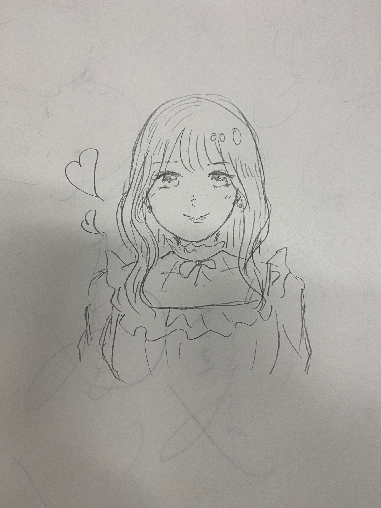

2021/0323Tue遠回りして帰りたい日もある
本日、
シブヤノオト出演します♡
おたのしみに〜〜
こんばんは！
伊藤純奈です

みおデザインのパーカー！
かわいくてお気に入り〜〜〜
賀喜ちゃんとまゆが
似顔絵をかいてくれました♡
これが賀喜ちゃん作

まゆ作

2人とも上手すぎて
お姉さんびっくりしたꪔ̤̥
うれしい〜素敵すぎる才能！！！
ありがとうふたりとも♡
もうすぐで2期生ライブです！
まだ実感がわかないけどみおなの
乃木坂としての最後の日でもあります。
やっと、やっと出来る2期生ライブで
とってもうれしい気持ち☺︎
思い出に残る1日にしよう...！
また直前にブログ書きますね〜〜
EX大衆発売中です、れのと
取材してもらいました☺︎ぜひ〜

(とりあえず自撮り載せておくスタイル)
それでは！
2021/03/23 17:00
コメント(292)
ブログ更新ありがとう☺️
シブヤノオト楽しみにしてる！！！
とりあえず自撮り載せておくスタイルはじゅんなちゃん推しさん全員好きだと思います ♀️笑
リハーサルとかたくさんお仕事あると思うけど、体調崩さず頑張ってください！
純奈ちゃん大好き〜！
シブヤノオト楽しみにしてる！！！
とりあえず自撮り載せておくスタイルはじゅんなちゃん推しさん全員好きだと思います ♀️笑
リハーサルとかたくさんお仕事あると思うけど、体調崩さず頑張ってください！
純奈ちゃん大好き〜！
純奈ちゃん今日もお疲れ様です！
そしてブログ更新ありがとう〜☺︎嬉しい〜！！
シブヤノオト出演すごく嬉しいよ！！！！
今日バイトない自分を褒め称えたい！リアタイする！純奈ちゃん見つけるよ〜！！！
二期生ライブすっごく楽しみだけど、始まったら終わっちゃう〜（ ; ; ）って気持ちになってます、、
配信でみんなの姿を目に焼き付けるぞ〜
とりあえず自撮りを載せておくスタイルに感謝しますありがとうございます◎
この前最後のミーグリの時
26thもありがとうお疲れ様！って言い忘れたのでこの場をお借りして、、
今純奈ちゃんに送るお手紙書いてるので届くのお楽しみに！
お体にはお気をつけください！健康第一です〜
ではまたね！☺︎
そしてブログ更新ありがとう〜☺︎嬉しい〜！！
シブヤノオト出演すごく嬉しいよ！！！！
今日バイトない自分を褒め称えたい！リアタイする！純奈ちゃん見つけるよ〜！！！
二期生ライブすっごく楽しみだけど、始まったら終わっちゃう〜（ ; ; ）って気持ちになってます、、
配信でみんなの姿を目に焼き付けるぞ〜
とりあえず自撮りを載せておくスタイルに感謝しますありがとうございます◎
この前最後のミーグリの時
26thもありがとうお疲れ様！って言い忘れたのでこの場をお借りして、、
今純奈ちゃんに送るお手紙書いてるので届くのお楽しみに！
お体にはお気をつけください！健康第一です〜
ではまたね！☺︎
ブログ更新ありがとう。
3月13日、14日のミーグリ参加しました。2期生楽曲に対する思い、未央奈ちゃんとの思い出など聞けてよかったです。
2期生8人で過ごす最後の時間をしっかりと焼きつけます。
3月13日、14日のミーグリ参加しました。2期生楽曲に対する思い、未央奈ちゃんとの思い出など聞けてよかったです。
2期生8人で過ごす最後の時間をしっかりと焼きつけます。
ブログ更新ありがと！！
今週は私が大好きな二期生がたくさん見れるから嬉しくもあり、未央奈ちゃんが卒業するから悲しい一週間でもある。でも、未央奈ちゃんの卒業は将来のための前向きな卒業ってわかってるから応援したいと思ってます。
二期生ライブ絶対泣くけど、、、
そして武道館でソリを引いてた二期生が単独ライブできるくらい大きくなったのは、本当に二期生が個人の仕事頑張ったりしてるからだと思うから本当に嬉しくてたまらないです！
二期生ライブの後の乃木中はズルすぎるー！！
でも本当に嬉しくて、次回予告見た瞬間涙が止まりませんでした。乃木中永久保存版にします！！！
Abemaの特番も絶対見ます！！
二期生ライブそして未央奈の卒業まで時間少ないけど二期生みんなで思い出作ってその思い出を言える範囲で教えて欲しいです！
二期生ライブリアタイでも、見逃しでもどっちも絶対に見ます！
リハ大変だと思うけど体調には気をつけて頑張ってね！！！！！
純奈大好き！！
二期生最強・最高・大好き！
今週は私が大好きな二期生がたくさん見れるから嬉しくもあり、未央奈ちゃんが卒業するから悲しい一週間でもある。でも、未央奈ちゃんの卒業は将来のための前向きな卒業ってわかってるから応援したいと思ってます。
二期生ライブ絶対泣くけど、、、
そして武道館でソリを引いてた二期生が単独ライブできるくらい大きくなったのは、本当に二期生が個人の仕事頑張ったりしてるからだと思うから本当に嬉しくてたまらないです！
二期生ライブの後の乃木中はズルすぎるー！！
でも本当に嬉しくて、次回予告見た瞬間涙が止まりませんでした。乃木中永久保存版にします！！！
Abemaの特番も絶対見ます！！
二期生ライブそして未央奈の卒業まで時間少ないけど二期生みんなで思い出作ってその思い出を言える範囲で教えて欲しいです！
二期生ライブリアタイでも、見逃しでもどっちも絶対に見ます！
リハ大変だと思うけど体調には気をつけて頑張ってね！！！！！
純奈大好き！！
二期生最強・最高・大好き！
じゅんにゃーー＼(^o^)／お疲れさまでした
シブヤノオト楽しみ＼(^o^)／
そして可愛い後輩から貰った似顔絵、素敵すぎるよね(｡>﹏<｡)
本当に二人うまいよね(ﾟдﾟ)！
2期生ライブ頑張って(/･ω･)/凄く楽しみ
とりあえず自撮り写真ってありがたいよ(*´ω｀*)
ウインク写真もレアだよね♪
これからも頑張って(/･ω･)/
シブヤノオト楽しみ＼(^o^)／
そして可愛い後輩から貰った似顔絵、素敵すぎるよね(｡>﹏<｡)
本当に二人うまいよね(ﾟдﾟ)！
2期生ライブ頑張って(/･ω･)/凄く楽しみ
とりあえず自撮り写真ってありがたいよ(*´ω｀*)
ウインク写真もレアだよね♪
これからも頑張って(/･ω･)/
楽しみです
更新ありがとう〜！ロングヘア可愛い、、涙涙
ライブ楽しみにしてるね！
ライブ楽しみにしてるね！
純奈ちゃんブログ更新ありがとう〜！
シブヤノオト絶対に見ます！
2期生ライブとても楽しみです！
メンバーとの素敵な思い出にしてください！
自撮りの写真ありがとうございます！すごく可愛いです！
癒されます！
シブヤノオト絶対に見ます！
2期生ライブとても楽しみです！
メンバーとの素敵な思い出にしてください！
自撮りの写真ありがとうございます！すごく可愛いです！
癒されます！
二期live 頑張れ おじゅんな♪ヽ(￣▽￣)ノ・・・・みおな♪見納め・・・(TДT)
こんばんわ！！
先週のshowroom観たよ(^o^)
あと約1週間…寂しいよね(T ^ T)
2期皆んなで目一杯思い出作ってください！！
先週のshowroom観たよ(^o^)
あと約1週間…寂しいよね(T ^ T)
2期皆んなで目一杯思い出作ってください！！
もう全部楽しみすぎて楽しい(ﾉ*°▽°)ﾉ
純ちゃんブログ更新ありがとう！
今日はシブヤノオト見るね！
2期生ライブもとっても楽しみにしてるよ〜！
今日はシブヤノオト見るね！
2期生ライブもとっても楽しみにしてるよ〜！
じゅんなちゃん見てると本当に癒されます！！
純奈ちゃんブログありがとう〜！
とっても可愛いセルカ嬉しいよ〜！！！
2期生ライブ思いっきり楽しんで素敵な時間にしてください！
応援してます（＾_＾）
はやくじゅんちゃんに会いたいな〜！
純奈好き。
大すこ大すこ
シブヤノオト 見ますよ ライブは楽しんで下さい
じゅんなちゃん
ブログ更新ありがと〜
先日はミーグリありがとうございました
話したいことは たくさんあるのに
いざ始まると 内容が薄くてごめんなさい
でもお顔を見てるだけでも 嬉しいんだよなぁー
シブヤノオト見るねー
2期生ライブまで いっぱい出てくれ
うれしいねぇ
またコメントしますね
ブログ更新ありがと〜
先日はミーグリありがとうございました
話したいことは たくさんあるのに
いざ始まると 内容が薄くてごめんなさい
でもお顔を見てるだけでも 嬉しいんだよなぁー
シブヤノオト見るねー
2期生ライブまで いっぱい出てくれ
うれしいねぇ
またコメントしますね
純奈ちゃんブログ更新ありがとう！！
シブヤノオト絶対みる〜！！！楽しみだ︎︎☺︎
26枚目のミーグリたくさんありがとう！本当にお疲れ様でした！！とっても楽しかったし、割と参加出来たからいっぱい純奈ちゃんにお話することが出来て嬉しかったし幸せだった！
2期生ライブまでもうすぐだね、楽しみだけど始まったら終わっちゃうし、終わったら未央奈卒業だしで色んな気持ちが混ざってる！でも2期生ライブが出来ることは本当にありがたい事だから！すっっっごい楽しみ！！！リハとか練習とか頑張ってね！
大好きだよ！お話出来る機会出来たらまた沢山会いに行きます！！
いつも幸せをくれてありがとう！！写真とっても可愛い〜！！
シブヤノオト絶対みる〜！！！楽しみだ︎︎☺︎
26枚目のミーグリたくさんありがとう！本当にお疲れ様でした！！とっても楽しかったし、割と参加出来たからいっぱい純奈ちゃんにお話することが出来て嬉しかったし幸せだった！
2期生ライブまでもうすぐだね、楽しみだけど始まったら終わっちゃうし、終わったら未央奈卒業だしで色んな気持ちが混ざってる！でも2期生ライブが出来ることは本当にありがたい事だから！すっっっごい楽しみ！！！リハとか練習とか頑張ってね！
大好きだよ！お話出来る機会出来たらまた沢山会いに行きます！！
いつも幸せをくれてありがとう！！写真とっても可愛い〜！！
お疲れ様、
ブログ更新ありがとう！
今週末いよいよ2期生のライブだね。
ずっと行きたかったので、本当に楽しみだよ！！
ライブ会場ではないけど、遠くから全力で
純奈を応援してる。
EX大衆もう買ったけど、まだ届いていないので、
楽しみにしている。
ライブ頑張って！
では
ブログ更新ありがとう！
今週末いよいよ2期生のライブだね。
ずっと行きたかったので、本当に楽しみだよ！！
ライブ会場ではないけど、遠くから全力で
純奈を応援してる。
EX大衆もう買ったけど、まだ届いていないので、
楽しみにしている。
ライブ頑張って！
では
純奈さん！お疲れ様です
二期生ライブみんなで未央奈さんを送り出しましょう。
多分泣いちゃうと思うけど目に焼き付けます！
てんま
二期生ライブみんなで未央奈さんを送り出しましょう。
多分泣いちゃうと思うけど目に焼き付けます！
てんま
はじめまして！
日に日に美人さんになっていってついていけません（笑）
仕事辞めて1ヶ月ニートしてたけど、また4月からじゅんをみてちゃんと働きます。
体に気をつけて頑張ってね！
日に日に美人さんになっていってついていけません（笑）
仕事辞めて1ヶ月ニートしてたけど、また4月からじゅんをみてちゃんと働きます。
体に気をつけて頑張ってね！
じゅんちゃん！2期生ライブとっても楽しみにしています！！！
頑張ってくださいˊᵕˋ
頑張ってくださいˊᵕˋ
今日のシブヤノオト見るよー！！おまけに後でもう一度見るために録画もばっちりしといたよー！！
純奈ちゃんブログ更新ありがとう！！
まずは26枚目ミーグリおつかれさまでした！！本当にたくさん純奈ちゃんとお話出来てとっても幸せな2ヶ月間でした( ˊᵕˋ )♡
たくさんたくさんありがとう！！
また次のシングルでお話出来る機会があったら絶対参加するね！
自撮りもありがとう！！めっちゃめちゃかわいいよ〜！！
シブヤノオト絶対見るよ〜！楽しみ☺︎
お手紙も書くね( ¨̮ )
純奈ちゃんだいすきです！体調には気を付けてご慈愛くださいね☺︎
まずは26枚目ミーグリおつかれさまでした！！本当にたくさん純奈ちゃんとお話出来てとっても幸せな2ヶ月間でした( ˊᵕˋ )♡
たくさんたくさんありがとう！！
また次のシングルでお話出来る機会があったら絶対参加するね！
自撮りもありがとう！！めっちゃめちゃかわいいよ〜！！
シブヤノオト絶対見るよ〜！楽しみ☺︎
お手紙も書くね( ¨̮ )
純奈ちゃんだいすきです！体調には気を付けてご慈愛くださいね☺︎
ブログ更新ありがとう。
髪切ってショートの時に、凄く素敵になって、最近はロングで綺麗さに圧倒されてます。
最終のミーグリは、綺麗さに圧倒されっぱなしでした。
2期生ライブはアウター配信付きのを買ってあります。
純奈ちゃんの歌の上手さも期待してますが、未央奈ちゃんの卒コンにもなっているので、最高の2期生ライブを期待しています。アウターまで気を抜かないで頑張ってね。
髪切ってショートの時に、凄く素敵になって、最近はロングで綺麗さに圧倒されてます。
最終のミーグリは、綺麗さに圧倒されっぱなしでした。
2期生ライブはアウター配信付きのを買ってあります。
純奈ちゃんの歌の上手さも期待してますが、未央奈ちゃんの卒コンにもなっているので、最高の2期生ライブを期待しています。アウターまで気を抜かないで頑張ってね。
純ちゃん ごきげんよう(^^)
【シブヤノオト】
ヤッター♪ヾ(◎´∀｀◎)ﾉ ♪
楽しみ、録画予約OK
純ちゃん美形だね
美人さん(//∇//)
【シブヤノオト】
ヤッター♪ヾ(◎´∀｀◎)ﾉ ♪
楽しみ、録画予約OK
純ちゃん美形だね
美人さん(//∇//)
こんばんは。
昨日の番組で焼き芋を美味しく食べる方をやってましたよ。
サンドイッチマンさんと愛菜ちゃんがやってる番組です。
広瀬すずさんが美味しく食べてましたよ。
レンジで簡単に出来るみたいです。
昨日の番組で焼き芋を美味しく食べる方をやってましたよ。
サンドイッチマンさんと愛菜ちゃんがやってる番組です。
広瀬すずさんが美味しく食べてましたよ。
レンジで簡単に出来るみたいです。
純ちゃんブログ更新ありがとう〜！！！！そろそろロングにするかな？って勝手に思ってたけどほんとにロングになっててカワイイ！！！！！どの髪型でも大好きだけどロング純ちゃん可愛すぎます！！！！！！ シブヤノオトもライブも楽しみです
純奈、ブログ更新ありがとうございます。
とりあえずロング純奈がいい女過ぎるー。ミーグリでお話出来て嬉しかったよ。
シブヤノオトやったー！楽しみです。また感想コメントしますね。
かっきーもまゆたんも絵がとってもお上手。純奈は愛されていますね。頼れる姉御感がすごいです。あ、褒めてますよ。
二期生ライブも未央奈ラストだけど、一瞬も見逃す事なく、瞬きしないで見ますね！
それでは、お体に気をつけて！ずっとずっと応援しています！
とりあえずロング純奈がいい女過ぎるー。ミーグリでお話出来て嬉しかったよ。
シブヤノオトやったー！楽しみです。また感想コメントしますね。
かっきーもまゆたんも絵がとってもお上手。純奈は愛されていますね。頼れる姉御感がすごいです。あ、褒めてますよ。
二期生ライブも未央奈ラストだけど、一瞬も見逃す事なく、瞬きしないで見ますね！
それでは、お体に気をつけて！ずっとずっと応援しています！
純奈ちゃん〜
シブヤノオト観ます！楽しみ
未央奈パーカーめっちゃ似合ってます！この前ののぎおびのときに着てたよね！未央奈ちゃんと純奈ちゃんのくだらない(ごめんなさい)日常会話を聞けた気がしてすごく楽しかったです
2期生ライブ観ます！アフター配信もリピート配信も全部観ます！2期ちゃんたちが色々考えて創ってくれたライブだからきっと素敵なライブなんだろうなって今からわくわくしています！
純奈ちゃんも楽しんでください
シブヤノオト観ます！楽しみ
未央奈パーカーめっちゃ似合ってます！この前ののぎおびのときに着てたよね！未央奈ちゃんと純奈ちゃんのくだらない(ごめんなさい)日常会話を聞けた気がしてすごく楽しかったです
2期生ライブ観ます！アフター配信もリピート配信も全部観ます！2期ちゃんたちが色々考えて創ってくれたライブだからきっと素敵なライブなんだろうなって今からわくわくしています！
純奈ちゃんも楽しんでください
純奈ちゃんお疲れさま！
インスタ最近見始めました。
シブヤノオト出演おめでとう。
みんな卒業しちゃうなあ
寂しいね、純奈ちゃん！
また誰かの携帯に変顔を残して欲しいなあ
このイタズラけっこう好きですよ。
がんばれー、純奈ちゃん(^o^)/
インスタ最近見始めました。
シブヤノオト出演おめでとう。
みんな卒業しちゃうなあ
寂しいね、純奈ちゃん！
また誰かの携帯に変顔を残して欲しいなあ
このイタズラけっこう好きですよ。
がんばれー、純奈ちゃん(^o^)/
純奈ちゃんだいすこだいすこ！！！！
純奈さん、ブログ更新ありがとう。
2期生バスラ楽しみにしてます。頑張って下さいね
2期生バスラ楽しみにしてます。頑張って下さいね
純奈〜ブログ更新ありがとう！
シブヤノオト観るからね〜。フルサイズ披露だしね。
2期生ライブも観ますよ〜。未央奈のラスト良いライブにしてね。
真琴
シブヤノオト観るからね〜。フルサイズ披露だしね。
2期生ライブも観ますよ〜。未央奈のラスト良いライブにしてね。
真琴
今週ですね！頑張って下さい
ブログ更新ありがとうございます！
シブヤノオトも二期生ライブも絶対見ます！
今から楽しみ！！！
かっきー絵が上手いし、まゆたんも純ちゃんって書くところも愛くるしくて良い…
シブヤノオトも二期生ライブも絶対見ます！
今から楽しみ！！！
かっきー絵が上手いし、まゆたんも純ちゃんって書くところも愛くるしくて良い…
純奈ちゃん、ブログ更新ありがとう。
「Venusは 西と東の空高く
君ほほえむが 如く輝く」
Venusは金星、そして美の女神。金星といえば宵の明星、明けの明星。そう、ひときわ輝く、星の中の星。たまには月とランデブ―もするよ。てへ！
純奈ちゃんは、私の一番星です。
いつも元気をもらっています。ありがとう。チ―ズフォンデュさんのように素敵な歌を作れたらいいんだけど、それは手の届かない夢…
2期生ライブ、がんばってください。❤
#8
「Venusは 西と東の空高く
君ほほえむが 如く輝く」
Venusは金星、そして美の女神。金星といえば宵の明星、明けの明星。そう、ひときわ輝く、星の中の星。たまには月とランデブ―もするよ。てへ！
純奈ちゃんは、私の一番星です。
いつも元気をもらっています。ありがとう。チ―ズフォンデュさんのように素敵な歌を作れたらいいんだけど、それは手の届かない夢…
2期生ライブ、がんばってください。❤
#8
可愛い自撮りありがとうございます！
2期生ライブ楽しみにしてます！
2期生ライブ楽しみにしてます！
純奈可愛いすぎる！
シブヤノオト楽しみにしてる！
シブヤノオト楽しみにしてる！
純奈ちゃん、おつかれさまっ！
シブヤノオト出るんだ！！
楽しみすぎる～！！
茶髪のロングウィッグにカチューシャとかかわいすぎるやろ～！！
かっきーとまゆたんの似顔絵めっちゃ上手いね～！
2期生ライブ、始まりから観られるか心配だけど、リピート配信でもキッチリ観るからね！
リハは順調かな？
楽しみ～！
１日だけしかないのがもったいないよね！！
体調に気をつけて頑張ってね！
応援してます！！
シブヤノオト出るんだ！！
楽しみすぎる～！！
茶髪のロングウィッグにカチューシャとかかわいすぎるやろ～！！
かっきーとまゆたんの似顔絵めっちゃ上手いね～！
2期生ライブ、始まりから観られるか心配だけど、リピート配信でもキッチリ観るからね！
リハは順調かな？
楽しみ～！
１日だけしかないのがもったいないよね！！
体調に気をつけて頑張ってね！
応援してます！！
純奈ちゃんブログ更新ありがとう。
この前のミーグリ で2期生楽曲に対する思いや未央奈ちゃんとの思い出を聞けて充実した時間になりました。
シブヤノオト絶対見ます。
この前のミーグリ で2期生楽曲に対する思いや未央奈ちゃんとの思い出を聞けて充実した時間になりました。
シブヤノオト絶対見ます。
純奈ちゃん更新ありがとう！
21日のミーグリ、4部でお会いした者デス❣️
楽しい時間で幸せすぎた～ヽ(´▽｀)/
昨日のひかりTVの純奈ちゃんがクイズ終わった後に、両手で ってやった時、
ミーグリで私が花粉症大丈夫ですか？って聞いた時に大丈夫って やってくれたの思い出して嬉しかった
二期生ライブも楽しんでください♪
そして、今週の乃木中楽しみすぎる～⤴️
では、またね

21日のミーグリ、4部でお会いした者デス❣️
楽しい時間で幸せすぎた～ヽ(´▽｀)/
昨日のひかりTVの純奈ちゃんがクイズ終わった後に、両手で ってやった時、
ミーグリで私が花粉症大丈夫ですか？って聞いた時に大丈夫って やってくれたの思い出して嬉しかった
二期生ライブも楽しんでください♪
そして、今週の乃木中楽しみすぎる～
では、またね
じゅんなちゃんこんにちは。美人さんの自撮りはとっても目の保養なのでどんどん載せてくださいな！このパーカー何にでも合わせられそうで素敵。
かきちゃんもまゆちゃんも上手だ〜。乃木坂ちゃんは絵の上手い子も多いよね。独創的な感性の子もいるけど。（笑）私は絶望的に下手なので羨ましい…。上手くかけたら楽しいだろうなぁ。
遠回りして帰りたいとき…あるよね。今ちょっと色々考え事することが多いんだけど、乃木坂の歌詞がね、改めて身に染みますよ。本当にずっと支えられっぱなしです。乃木坂に。
それでは、お身体に気をつけてお過ごし下さいませ。ライブ楽しみ♪
かきちゃんもまゆちゃんも上手だ〜。乃木坂ちゃんは絵の上手い子も多いよね。独創的な感性の子もいるけど。（笑）私は絶望的に下手なので羨ましい…。上手くかけたら楽しいだろうなぁ。
遠回りして帰りたいとき…あるよね。今ちょっと色々考え事することが多いんだけど、乃木坂の歌詞がね、改めて身に染みますよ。本当にずっと支えられっぱなしです。乃木坂に。
それでは、お身体に気をつけてお過ごし下さいませ。ライブ楽しみ♪
純奈ちゃん、 こんばんは！
賀喜ちゃんとまゆたんの似顔絵は個性があってどちらも魅力がありますね！CDショップでポップとか描いたら良いんじゃないかと思います。
堀さんの最後のライブとなります、2期生ライブがもうすぐですね、純奈さんの言う通り思い出に残るライブになれば良いと思います。
写真はとても嬉しいです。ピアスも良い感じです。耳も柔らかそうで触れてみたいです。
おやすみ
賀喜ちゃんとまゆたんの似顔絵は個性があってどちらも魅力がありますね！CDショップでポップとか描いたら良いんじゃないかと思います。
堀さんの最後のライブとなります、2期生ライブがもうすぐですね、純奈さんの言う通り思い出に残るライブになれば良いと思います。
写真はとても嬉しいです。ピアスも良い感じです。耳も柔らかそうで触れてみたいです。
おやすみ
シブヤノオト見るね！！！
２期生ライブもアベマの配信も乃木中も楽しみで今からずっとワクワクです
純奈ちゃんのおかげで本当に楽しいよ、ありがとう
２期生ライブもアベマの配信も乃木中も楽しみで今からずっとワクワクです
純奈ちゃんのおかげで本当に楽しいよ、ありがとう
純ちゃんー
2期生ライブ楽しみにしてますー
2期生ライブ楽しみにしてますー
こんばんは。ブログ更新ありがとうございます。
自撮りの写真、美しー。ため息がでちゃうくらいですね。賀喜ちゃんとまゆちゃんの似顔絵も思いっきり美人さんですね～。
シブヤノオト録画予約しました！！純奈ちゃんいっぱい映ると良いなと思います。未央奈ちゃん卒業直前なので、ゆっくりと咲く花をやってくれると最高なのですが。次のシングルのカップリングでも良いので、発売して欲しいです。
ではまた。
自撮りの写真、美しー。ため息がでちゃうくらいですね。賀喜ちゃんとまゆちゃんの似顔絵も思いっきり美人さんですね～。
シブヤノオト録画予約しました！！純奈ちゃんいっぱい映ると良いなと思います。未央奈ちゃん卒業直前なので、ゆっくりと咲く花をやってくれると最高なのですが。次のシングルのカップリングでも良いので、発売して欲しいです。
ではまた。
純ちゃん こんばんは
ずっと一緒にやって来た
ミオナが居なくなるのは寂しいですね
が、2期は絆が深いし
2期生会で また会えるしね
ライブ いい思い出に❗️
また、ショート❤️を期待する
クロゲでした
ずっと一緒にやって来た
ミオナが居なくなるのは寂しいですね
が、2期は絆が深いし
2期生会で また会えるしね
ライブ いい思い出に❗️
また、ショート❤️を期待する
クロゲでした


まずは26thのミーグリありがとうございました！
私自身初めてですごい緊張してたけど純奈ちゃんと楽しくお話出来てすごい楽しいかったです♡
そして念願の2期生ライブ！！大好きな2期生のパフォーマンスが見れる喜びとアイドルとしての未央奈が見れる最後の日の悲しさ…色んな感情があるけど沢山目に焼き付けたいと思います！！
純奈ちゃん2期生ライブ頑張ってね応援してます
純奈ちゃん大好き♡